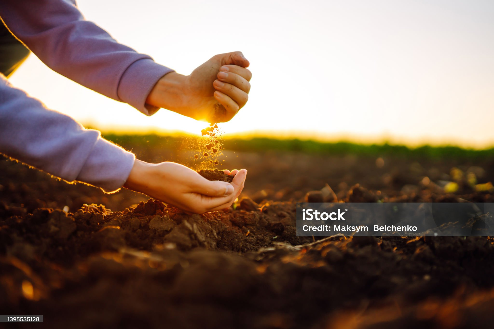

La importancia de la agricultura sostenible

La agricultura sostenible es un modelo de producción agrícola que busca mantener la productividad a largo plazo, respetando los ciclos naturales, cuidando el medioambiente y mejorando la calidad de vida de quienes trabajan la tierra.
1. Cuidado del suelo y del agua
Una agricultura sostenible evita el uso excesivo de pesticidas y fertilizantes químicos, y promueve técnicas como la rotación de cultivos, el compostaje y el uso eficiente del agua. Esto ayuda a conservar la fertilidad del suelo y a prevenir la contaminación de ríos y napas subterráneas.
2. Respeto por la biodiversidad
En lugar de grandes monocultivos que agotan los recursos, la agricultura sostenible fomenta la diversidad de especies. Esto mejora la resiliencia frente a plagas y enfermedades, y protege los ecosistemas locales.
3. Alimentos más saludables
Al reducir los insumos químicos, se producen alimentos más naturales, seguros y nutritivos. Estos productos son ideales para personas que buscan una alimentación saludable, libre de residuos tóxicos.
4. Apoyo a comunidades rurales
Este modelo agrícola prioriza el bienestar de pequeños productores, garantizando condiciones laborales justas y precios dignos. Además, fortalece la economía local y mantiene viva la cultura campesina.
5. Reducción de la huella de carbono
La agricultura sostenible reduce el uso de maquinaria pesada y transporte innecesario, lo que ayuda a disminuir las emisiones de gases de efecto invernadero. También se enfoca en el consumo local y de temporada.
¿Por qué es tan relevante hoy?
En un contexto de crisis climática, escasez de agua y pérdida de biodiversidad, la agricultura sostenible se presenta como una solución concreta y necesaria para alimentar al mundo sin destruirlo.
Conclusión
Al consumir productos provenientes de agricultura sostenible, no solo estás cuidando tu salud, sino también apoyando un sistema más justo, responsable y consciente. Desde Huerto Hogar, promovemos prácticas que conectan a las personas con la tierra, de forma equilibrada y respetuosa.